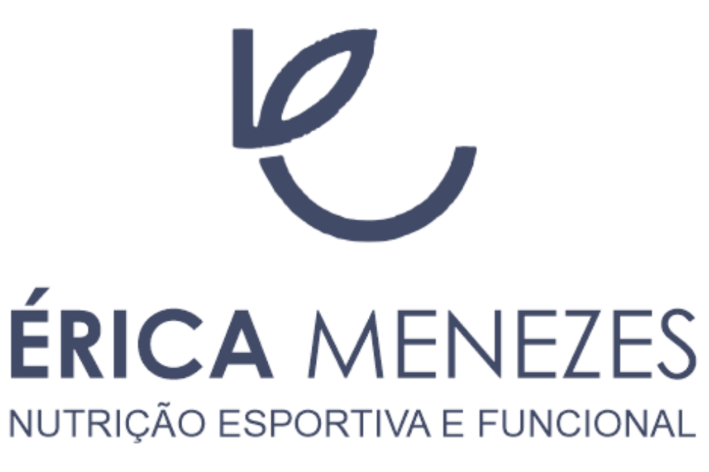

Como funcionam os programas de acompanhamento online?
Existem 2 modalidades (Plano Basic e Plano Gold), lhe permitindo escolher o que mais se adequa a você.
Plano Basic
✔️ Avaliação via formulário;
✔️ Plano alimentar indvidualizado entregue em 3 dias úteis;
✔️ Prescrição de suplementos e fitoterápicos, caso necessário;
✔️ Suporte via App com chat diretamente com a Dra., alerta de água e diário alimentar;
✔️ Materiais complementares;
✔️ Poderá ser solicitado acompanhamento paralelo com outros profissionais. Ex.: Médico ou psicólogo.
60 Dias - 2 Planos alimentares:
R$179,00
90 Dias - 3 Planos alimentares:
R$268,00
Eu quero
Plano Gold
✔️ Avaliação via vídeochamada com o mesmo protocolo utilizado nas consultas presenciais;
✔️ Plano alimentar indvidualizado entregue em 3 dias úteis;
✔️ Prescrição de suplementos e fitoterápicos, caso necessário;
✔️ Suporte via App com chat diretamente com a Dra., alerta de água e diário alimentar;
✔️ Materiais complementares;
✔️ Poderá ser solicitado acompanhamento paralelo com outros profissionais. Ex.: Médico ou psicólogo.
60 Dias - 2 Planos alimentares:
R$229,00
90 Dias - 3 Planos alimentares:
R$343,00
Eu quero